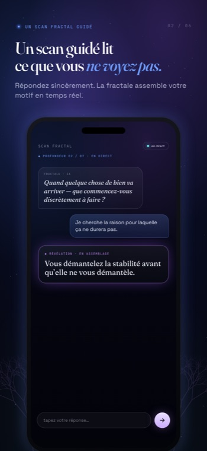
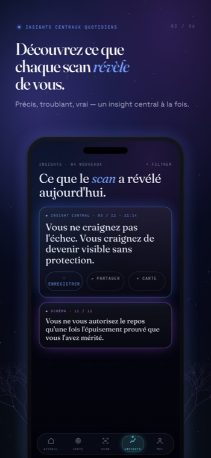
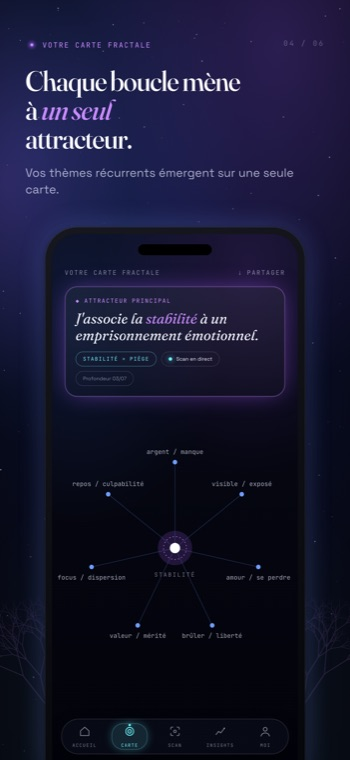
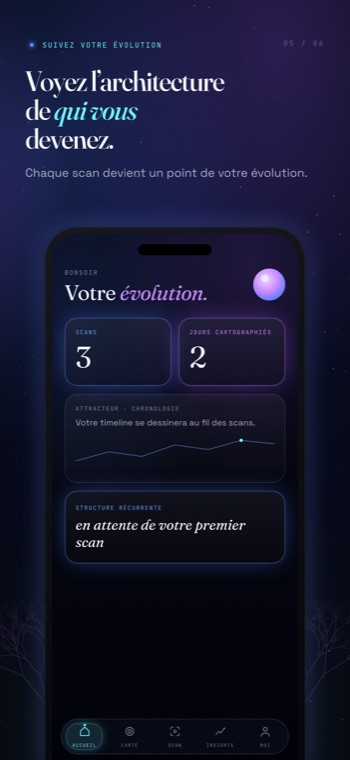
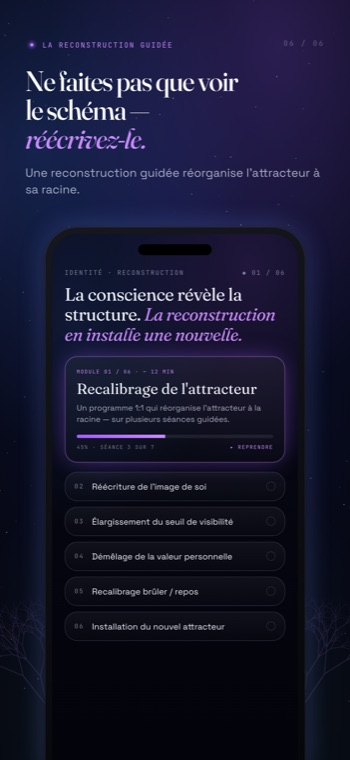

Pas un fil, pas une liste de fonctions à gérer. Chaque partie de Fractalogie pointe dans la même direction — vers l'unique boucle qui dirige discrètement ta vie, et la structure en dessous.

Une conversation calme et en direct avec un miroir qui pose une question déstabilisante à la fois.
Pas de déluge d'invites. Pas de conseil. Pas de questionnaire à vingt champs. Juste un fil précis, suivi jusqu'au bout — jusqu'à ce que le déclencheur, ta réaction, l'émotion qu'elle protège et le prix que tu continues de payer se mettent au point d'eux-mêmes.

Chaque scan renvoie une seule révélation nette — pas un fil à faire défiler.
Le Miroir nomme une répétition que tu n'avais pas mise en mots. Une phrase qui contient la boucle : « Quand ___, je ___, parce que je ressens ___, et ça mène à ___. » Tu ne repars pas avec des devoirs. Tu repars en voyant quelque chose que tu ne peux plus ne pas voir.

Chaque boucle que tu décodes remonte à un seul attracteur principal.
Relations, argent, travail, le corps — ils ressemblent à des problèmes distincts, mais la carte montre qu'ils suivent la même structure. Pas plusieurs problèmes. Un seul, qui se répète, à différentes échelles. Voir leur lien, c'est là où l'image cesse d'être abstraite.

Les motifs sauvegardés bâtissent une image vivante et évolutive de ta structure au fil du temps.
Chaque révélation que tu gardes ajoute un trait au dessin. Après des mois, tu ne regardes pas des notes éparses — tu regardes la forme de toi-même, comment elle se déplace, où elle se desserre. L'architecture n'est pas figée. Elle devient, et tu peux la regarder devenir.

Quand voir ne suffit plus, une reconstruction privée en 1:1 réorganise l'identité qui génère la boucle.
L'app révèle la structure. La reconstruction est là où elle se rebâtit — à la racine, dans une séance privée avec un être humain réel. Pour les boucles qui se répètent même après que tu les aies nommées, et que tu es prêt·e à changer l'auto-définition qui les maintient en place.
Ce que nous avons choisi de ne pas construire fait partie du produit. Pas de caméra, pas de pub, pas de courtiers en données — juste un miroir en qui tu peux avoir confiance.
Pas de caméra, pas de photos, pas de micro. Fractalogie ne lit que ce que tu choisis d'écrire.
Pas de SDK d'analytique, pas de réseaux publicitaires, pas de courtiers en données. Rien ne te suit hors de l'app.
L'expérience principale tourne sans connexion. Un compte ajoute seulement une synchronisation cloud facultative.
Efface ton compte et chaque donnée cloud instantanément, depuis l'app.
L'interface et chaque analyse suivent la langue que tu choisis — anglais, français, espagnol, allemand.
Tes mots servent à générer ton analyse — jamais à entraîner des modèles, ni les nôtres ni ceux de quiconque.
Ton premier scan est gratuit — aucun compte, aucun pistage, aucun bruit. L'Accès Fondateur déverrouille l'expérience complète.